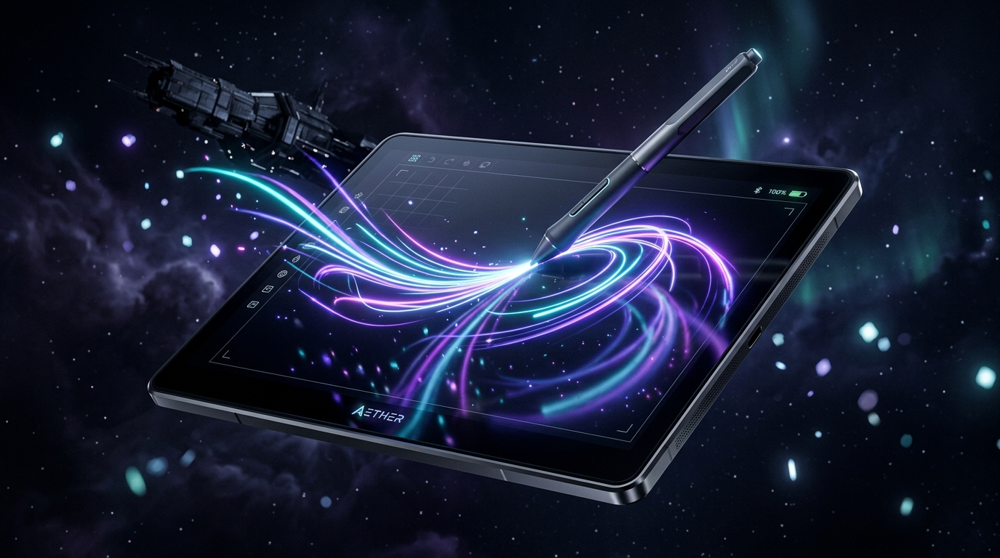
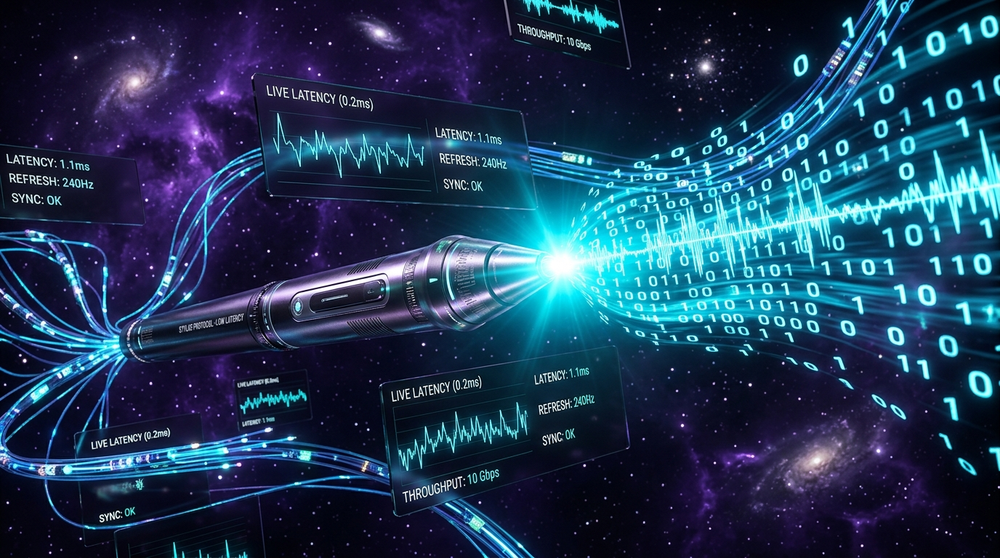

Turn your tablet into a
pro-grade drawing tablet.
Stream ultra-low latency stylus input up to 240 Hz with 4096 pressure levels and tilt dynamics from Android or iPad straight to Windows, Linux, and macOS over USB or Wi-Fi.
Free forever · Open Source (Apache 2.0) · Windows, Linux, macOS, Android, iOS · v1.1.0

- < 1ms
- USB Packet Latency
- 240 Hz
- Sampling Rate
- 4096
- Pressure Levels
- 5
- Platforms Supported
- 100% Free
- No ads, no subscriptions
Experience the latency & dynamics.
Test stylus, touch, or mouse input directly in your browser. Watch real-time sample rates, pressure curves, and stroke smoothing in action.
Built for the lowest latency possible.
Whether you use Krita, Photoshop, Clip Studio Paint, Blender, or OneNote, PenBridge delivers instant synthetic pointer injection that feels just like a dedicated drawing tablet.

Sub-Millisecond Wire Protocol
Our 24-byte binary UDP wire protocol strips away all HTTP overhead. Coordinate updates and high-precision pressure floats stream directly into the operating system driver within fractions of a millisecond.
Dual Connection Modes
Plug in with USB for rock-solid zero-jitter studio drawing with automatic ADB reverse configuration, or switch to Wi-Fi for wireless freedom with automatic mDNS peer discovery.
Full Stylus Dynamics
Captures hovering, pressure dynamics up to 4096 levels, barrel buttons, eraser mode, and dual-axis tilt (±90°). Every nuance of your S-Pen or Apple Pencil is faithfully transmitted.
Zero-Setup Google Account Pairing
Sign in with the same Google Account on both tablet and PC to link automatically without typing IP addresses or 6-digit codes. Chrome Remote Desktop-style pairing with zero backend servers.
Synthetic OS Pointer Drivers
Uses native Windows InjectSyntheticPointerInput, Linux /dev/uinput, and macOS CoreGraphics digitizer APIs for native driver-level pen integration.
24 Bytes. Zero Bloat.
PenBridge is designed for performance. Here is the compact binary packet transmitted over the wire for every pen event.
50 42 02 01 3F 2A E1 47 3F 58 92 1A 3E C8 00 00 00 0C FF F4 00 01 A4 2F
Download PenBridge v1.1.0
Native host background services for your PC and companion client apps for your tablets.
Windows (x64)
RecommendedWindows 10 & 11 64-bit installer with Inno Setup auto-dependency detection, driver & system tray monitor.
macOS (Universal)
Apple Silicon + IntelUniversal binary for macOS 12+ Monterey, Ventura, Sonoma, and Sequoia with CoreGraphics digitizer driver.
Linux (x64)
uinput DaemonSelf-contained daemon for Ubuntu, Fedora, Arch & Debian with systemd service and udev rule setup script.
Android Tablet
Kotlin + ComposeDirect APK install with Samsung S-Pen, Lenovo Precision Pen & active stylus support at up to 120Hz/240Hz.
iOS / iPadOS
Apple PencilSwiftUI + PencilKit client for iPad Pro and iPad Air with pressure, tilt angle, and azimith tracking.
Frequently Asked Questions
How does PenBridge achieve < 1ms latency?
PenBridge avoids standard HTTP or WebSocket overhead. In USB mode, it establishes a direct socket connection over an ADB reverse tunnel (or local USB pipe on iOS), transmitting raw 24-byte binary UDP/TCP packets directly to a driver thread that calls OS-native synthetic pointer APIs.
Does it work with Photoshop, Krita, and Blender?
Yes! Because the Windows host injects real POINTER_PEN_INFO events into the Windows Pointer Input subsystem (and Linux uses /dev/uinput), apps treat PenBridge exactly like a hardware Wacom, Huion, or Microsoft Surface pen digitizer.
Is a Google account required?
No. Google account pairing is completely optional. You can connect over USB with one click, or enter your PC's local IP address or rely on mDNS zero-conf without ever signing into any account.
Why is PenBridge completely free?
PenBridge is an open-source community project developed under the Apache License 2.0. There are no subscription fees, no locked features, no advertisements, and no telemetry data collection.